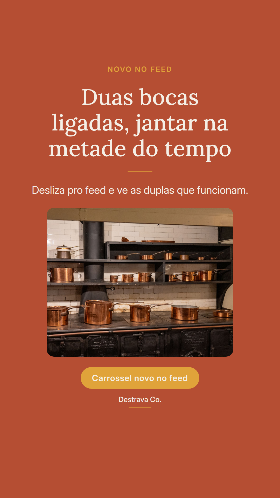
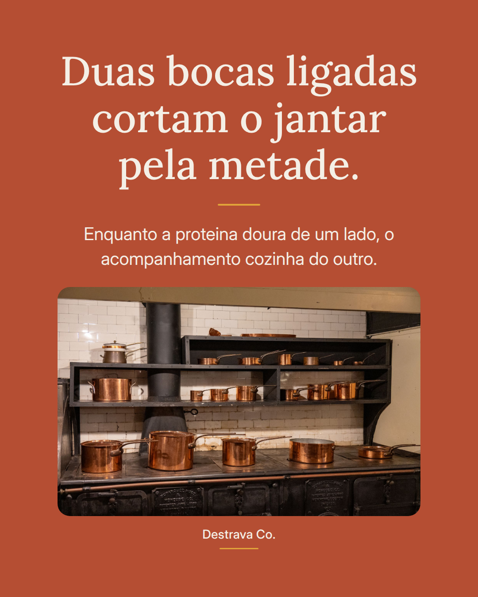
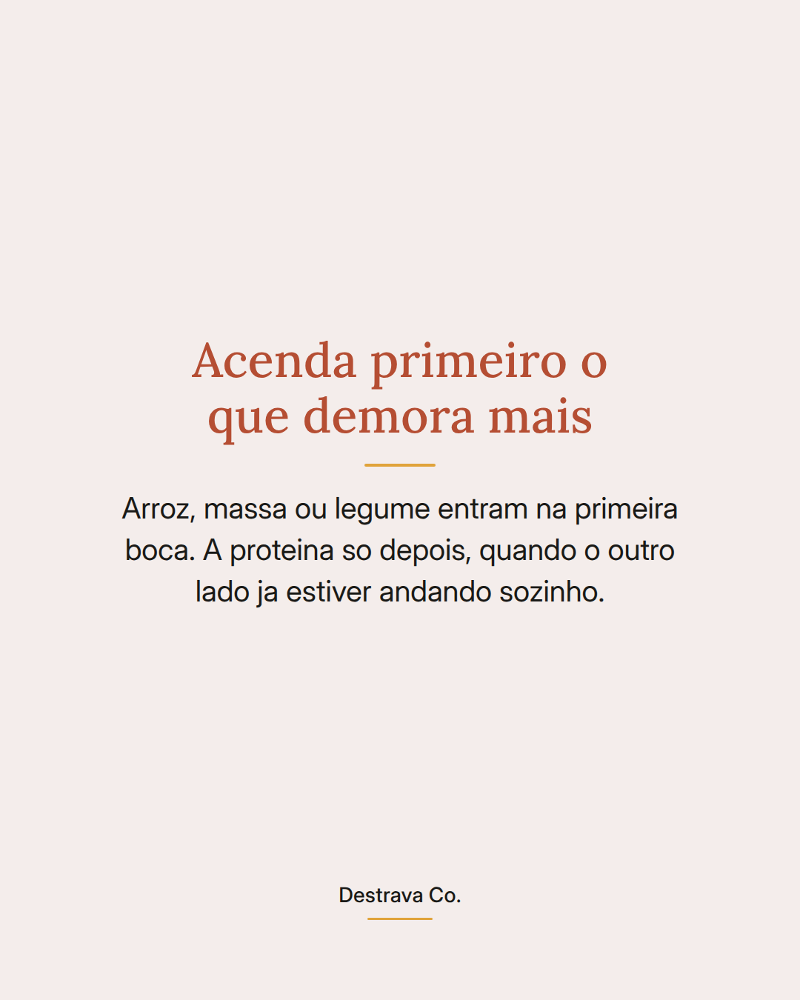
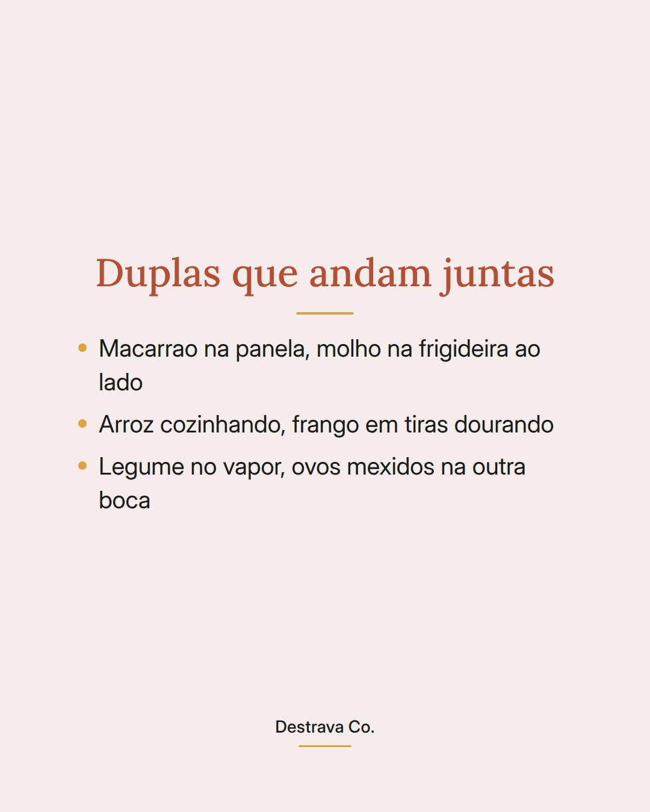
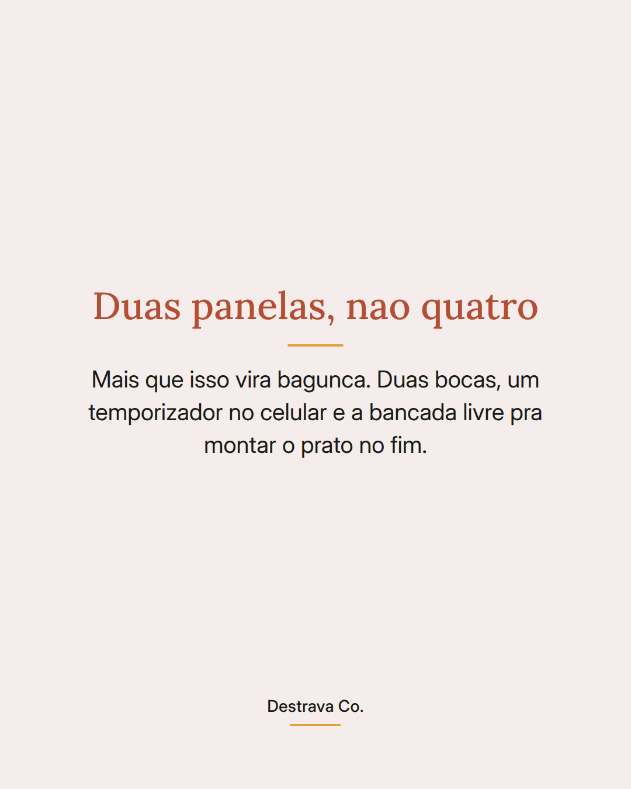

Jantar rapido fica mais rapido quando voce usa duas bocas do fogao ao mesmo tempo.
A gente costuma cozinhar em fila: primeiro o arroz, depois o frango, depois o legume. O fogao tem quatro bocas e a maior parte da noite so uma esta ligada.
O truque e simples: acende primeiro o que demora mais e deixa cozinhando sozinho. Enquanto isso, a frigideira ao lado resolve a proteina. Quando o arroz terminar, o resto ja esta pronto.
So nao passe de duas panelas. Duas voce consegue acompanhar, quatro viram correria e louca empilhada.
Salva pra lembrar na proxima noite corrida e manda pra quem cozinha sempre em fila. Se quiser, pega tambem o PDF gratis com 20 receitas de ate 15 minutos.